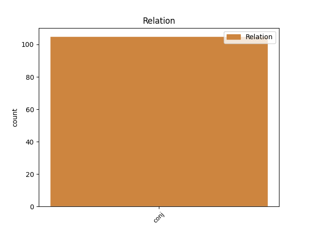
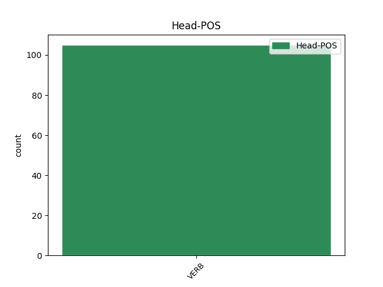
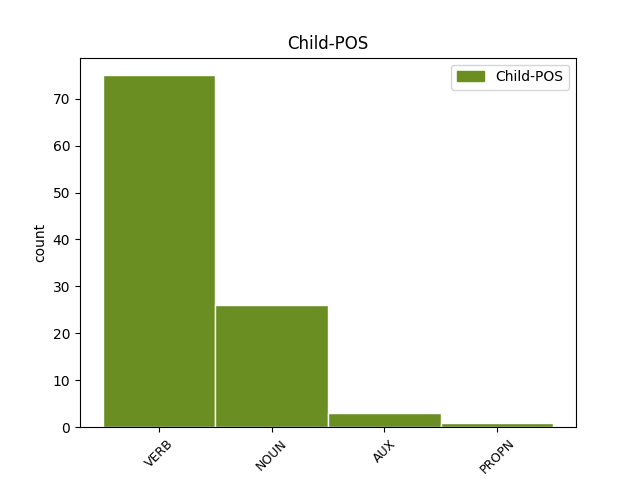

Distribution of features within this leaf



Agreement Rules sorted by frequency.
- When the dependent token is the conjunct(conj) of the head token, and the head token is VERB and the dependent token is VERB.
1 ऐसा _ _ _ _ 0 _ _ _
2 होने _ _ _ _ 0 _ _ _
3 की _ _ _ _ 0 _ _ _
4 स्थिति _ _ _ _ 0 _ _ _
5 में _ _ _ _ 0 _ _ _
6 शिक्षकों _ _ _ _ 0 _ _ _
7 के _ _ _ _ 0 _ _ _
8 लिए _ _ _ _ 0 _ _ _
9 पाठ्य _ _ _ _ 0 _ _ _
10 - _ _ _ _ 0 _ _ _
11 पुस्तकों _ _ _ _ 0 _ _ _
12 के _ _ _ _ 0 _ _ _
13 कुछ _ _ _ _ 0 _ _ _
14 अंश _ _ _ _ 0 _ _ _
15 न _ _ _ _ 0 _ _ _
16 पढ़ाने पढ़ा VERB VM Case=Acc|VerbForm=Inf 0 _ _ _
17 और _ _ _ _ 0 _ _ _
18 कुछ _ _ _ _ 0 _ _ _
19 अलग _ _ _ _ 0 _ _ _
20 से _ _ _ _ 0 _ _ _
21 पढ़ाने पढ़ा VERB VM Case=Acc|Number=Plur|VerbForm=Inf 16 conj _ ChunkId=VGNN3|ChunkType=head|Tam=nA|Translit=paṛhāne|Vib=ना_जैसा
22 जैसे _ _ _ _ 0 _ _ _
23 दिशा _ _ _ _ 0 _ _ _
24 - _ _ _ _ 0 _ _ _
25 निर्देश _ _ _ _ 0 _ _ _
26 भी _ _ _ _ 0 _ _ _
27 जारी _ _ _ _ 0 _ _ _
28 किए _ _ _ _ 0 _ _ _
29 जा _ _ _ _ 0 _ _ _
30 सकते _ _ _ _ 0 _ _ _
31 हैं _ _ _ _ 0 _ _ _
32 । _ _ _ _ 0 _ _ _
1 राष्ट्रपति _ _ _ _ 0 _ _ _
2 ने _ _ _ _ 0 _ _ _
3 कहा _ _ _ _ 0 _ _ _
4 कि _ _ _ _ 0 _ _ _
5 परंपरागत _ _ _ _ 0 _ _ _
6 जल _ _ _ _ 0 _ _ _
7 स्रोतों _ _ _ _ 0 _ _ _
8 को _ _ _ _ 0 _ _ _
9 दोबारा _ _ _ _ 0 _ _ _
10 जीवित _ _ _ _ 0 _ _ _
11 करने कर VERB VM Case=Acc|VerbForm=Inf 0 _ _ _
12 और _ _ _ _ 0 _ _ _
13 जल _ _ _ _ 0 _ _ _
14 संरक्षण संरक्षण NOUN NN Case=Acc|Gender=Masc|Number=Sing|Person=3 11 conj _ ChunkId=NP3|ChunkType=head|Tam=0|Translit=saṁrakṣaṇa|Vib=0_से
15 से _ _ _ _ 0 _ _ _
16 तीन _ _ _ _ 0 _ _ _
17 - _ _ _ _ 0 _ _ _
18 चार _ _ _ _ 0 _ _ _
19 साल _ _ _ _ 0 _ _ _
20 के _ _ _ _ 0 _ _ _
21 लिए _ _ _ _ 0 _ _ _
22 60 _ _ _ _ 0 _ _ _
23 लाख _ _ _ _ 0 _ _ _
24 रोजगार _ _ _ _ 0 _ _ _
25 के _ _ _ _ 0 _ _ _
26 अवसरों _ _ _ _ 0 _ _ _
27 का _ _ _ _ 0 _ _ _
28 सृजन _ _ _ _ 0 _ _ _
29 हो _ _ _ _ 0 _ _ _
30 सकता _ _ _ _ 0 _ _ _
31 है _ _ _ _ 0 _ _ _
32 और _ _ _ _ 0 _ _ _
33 यह _ _ _ _ 0 _ _ _
34 लक्ष्य _ _ _ _ 0 _ _ _
35 पूरा _ _ _ _ 0 _ _ _
36 हो _ _ _ _ 0 _ _ _
37 जाने _ _ _ _ 0 _ _ _
38 के _ _ _ _ 0 _ _ _
39 बाद _ _ _ _ 0 _ _ _
40 इसके _ _ _ _ 0 _ _ _
41 रख _ _ _ _ 0 _ _ _
42 - _ _ _ _ 0 _ _ _
43 रखाव _ _ _ _ 0 _ _ _
44 में _ _ _ _ 0 _ _ _
45 भी _ _ _ _ 0 _ _ _
46 लोगों _ _ _ _ 0 _ _ _
47 को _ _ _ _ 0 _ _ _
48 रोजगार _ _ _ _ 0 _ _ _
49 मिलेगा _ _ _ _ 0 _ _ _
50 । _ _ _ _ 0 _ _ _
1 यह _ _ _ _ 0 _ _ _
2 घटना _ _ _ _ 0 _ _ _
3 टोरंटो _ _ _ _ 0 _ _ _
4 हवाई _ _ _ _ 0 _ _ _
5 अड्डे _ _ _ _ 0 _ _ _
6 पर _ _ _ _ 0 _ _ _
7 एयरबस _ _ _ _ 0 _ _ _
8 ए _ _ _ _ 0 _ _ _
9 ३४० _ _ _ _ 0 _ _ _
10 के _ _ _ _ 0 _ _ _
11 फिसलने फिसल VERB VM Case=Acc|VerbForm=Inf 0 _ _ _
12 के _ _ _ _ 0 _ _ _
13 और _ _ _ _ 0 _ _ _
14 जल _ _ _ _ 0 _ _ _
15 जाने जा AUX VAUX Case=Acc|VerbForm=Inf 11 conj _ ChunkId=VGNN2|ChunkType=child|Tam=nA|Translit=jāne|Vib=ना
16 के _ _ _ _ 0 _ _ _
17 महज _ _ _ _ 0 _ _ _
18 दो _ _ _ _ 0 _ _ _
19 दिन _ _ _ _ 0 _ _ _
20 बाद _ _ _ _ 0 _ _ _
21 ही _ _ _ _ 0 _ _ _
22 हुई _ _ _ _ 0 _ _ _
23 है _ _ _ _ 0 _ _ _
24 । _ _ _ _ 0 _ _ _
Disagree Examples:
1 एयर _ _ _ _ 0 _ _ _
2 - _ _ _ _ 0 _ _ _
3 इंडिया _ _ _ _ 0 _ _ _
4 बम _ _ _ _ 0 _ _ _
5 कांड _ _ _ _ 0 _ _ _
6 सुनवाई _ _ _ _ 0 _ _ _
7 में _ _ _ _ 0 _ _ _
8 बचाव _ _ _ _ 0 _ _ _
9 पक्ष _ _ _ _ 0 _ _ _
10 ने _ _ _ _ 0 _ _ _
11 गवाह _ _ _ _ 0 _ _ _
12 पर _ _ _ _ 0 _ _ _
13 फर्जी _ _ _ _ 0 _ _ _
14 क्रेडिट _ _ _ _ 0 _ _ _
15 कार्ड _ _ _ _ 0 _ _ _
16 बेचने _ _ _ _ 0 _ _ _
17 , _ _ _ _ 0 _ _ _
18 गैरकानूनी _ _ _ _ 0 _ _ _
19 ढंग _ _ _ _ 0 _ _ _
20 से _ _ _ _ 0 _ _ _
21 दवाइयां _ _ _ _ 0 _ _ _
22 बेचने बेच VERB VM Case=Acc|VerbForm=Inf 0 _ _ _
23 , _ _ _ _ 0 _ _ _
24 आव्रजन _ _ _ _ 0 _ _ _
25 घोटाला घोटाला PROPN NNP Case=Nom|Gender=Masc|Number=Sing|Person=3 22 conj _ ChunkId=NP7|ChunkType=head|Tam=0|Translit=ghoṭālā|Vib=0
26 व _ _ _ _ 0 _ _ _
27 फर्जी _ _ _ _ 0 _ _ _
28 शादी _ _ _ _ 0 _ _ _
29 इत्यादि _ _ _ _ 0 _ _ _
30 अनेकों _ _ _ _ 0 _ _ _
31 आपराधिक _ _ _ _ 0 _ _ _
32 आरोप _ _ _ _ 0 _ _ _
33 लगाए _ _ _ _ 0 _ _ _
34 हैं _ _ _ _ 0 _ _ _
35 । _ _ _ _ 0 _ _ _
1 तहलका _ _ _ _ 0 _ _ _
2 मामला _ _ _ _ 0 _ _ _
3 सीबीआई _ _ _ _ 0 _ _ _
4 को _ _ _ _ 0 _ _ _
5 सौंपने सौंप VERB VM Case=Nom|VerbForm=Inf 0 _ _ _
6 और _ _ _ _ 0 _ _ _
7 उत्तर _ _ _ _ 0 _ _ _
8 - _ _ _ _ 0 _ _ _
9 पूर्वी _ _ _ _ 0 _ _ _
10 राज्यों _ _ _ _ 0 _ _ _
11 में _ _ _ _ 0 _ _ _
12 हाल _ _ _ _ 0 _ _ _
13 की _ _ _ _ 0 _ _ _
14 हिंसा हिंसा NOUN NN Case=Acc|Gender=Fem|Number=Sing|Person=3 5 conj _ ChunkId=NP5|ChunkType=head|Tam=0|Translit=hiṁsā|Vib=0_के_लिए
15 के _ _ _ _ 0 _ _ _
16 लिए _ _ _ _ 0 _ _ _
17 मनमोहन _ _ _ _ 0 _ _ _
18 सरकार _ _ _ _ 0 _ _ _
19 की _ _ _ _ 0 _ _ _
20 आलोचना _ _ _ _ 0 _ _ _
21 को _ _ _ _ 0 _ _ _
22 उन्होंने _ _ _ _ 0 _ _ _
23 सिरे _ _ _ _ 0 _ _ _
24 से _ _ _ _ 0 _ _ _
25 नकार _ _ _ _ 0 _ _ _
26 दिया _ _ _ _ 0 _ _ _
27 । _ _ _ _ 0 _ _ _
1 जलस्तर _ _ _ _ 0 _ _ _
2 बढ़ने बढ VERB VM Case=Nom|VerbForm=Inf 0 _ _ _
3 व _ _ _ _ 0 _ _ _
4 गाद _ _ _ _ 0 _ _ _
5 आने आ VERB VM Case=Acc|VerbForm=Inf 2 conj _ ChunkId=VGNN2|ChunkType=head|Tam=nA|Translit=āne|Vib=ना_से
6 से _ _ _ _ 0 _ _ _
7 पूर्वी _ _ _ _ 0 _ _ _
8 व _ _ _ _ 0 _ _ _
9 पश्चिमी _ _ _ _ 0 _ _ _
10 यमुना _ _ _ _ 0 _ _ _
11 नहर _ _ _ _ 0 _ _ _
12 और _ _ _ _ 0 _ _ _
13 हाइडल _ _ _ _ 0 _ _ _
14 लिंक _ _ _ _ 0 _ _ _
15 चैनल _ _ _ _ 0 _ _ _
16 को _ _ _ _ 0 _ _ _
17 बंद _ _ _ _ 0 _ _ _
18 कर _ _ _ _ 0 _ _ _
19 दिया _ _ _ _ 0 _ _ _
20 गया _ _ _ _ 0 _ _ _
21 है _ _ _ _ 0 _ _ _
22 । _ _ _ _ 0 _ _ _
1 १३ _ _ _ _ 0 _ _ _
2 मई _ _ _ _ 0 _ _ _
3 को _ _ _ _ 0 _ _ _
4 वायुसेना _ _ _ _ 0 _ _ _
5 का _ _ _ _ 0 _ _ _
6 हमले _ _ _ _ 0 _ _ _
7 के _ _ _ _ 0 _ _ _
8 लिए _ _ _ _ 0 _ _ _
9 तैयार _ _ _ _ 0 _ _ _
10 होना हो VERB VM Case=Nom|VerbForm=Inf 0 _ _ _
11 और _ _ _ _ 0 _ _ _
12 थलसेना _ _ _ _ 0 _ _ _
13 की _ _ _ _ 0 _ _ _
14 तैयारी _ _ _ _ 0 _ _ _
15 में _ _ _ _ 0 _ _ _
16 २५ _ _ _ _ 0 _ _ _
17 मई _ _ _ _ 0 _ _ _
18 तक _ _ _ _ 0 _ _ _
19 का _ _ _ _ 0 _ _ _
20 समय _ _ _ _ 0 _ _ _
21 लगने लग VERB VM Case=Acc|VerbForm=Inf 10 conj _ ChunkId=VGNN2|ChunkType=head|Tam=nA|Translit=lagane|Vib=ना_में
22 में _ _ _ _ 0 _ _ _
23 कुछ _ _ _ _ 0 _ _ _
24 भी _ _ _ _ 0 _ _ _
25 गलत _ _ _ _ 0 _ _ _
26 नहीं _ _ _ _ 0 _ _ _
27 है _ _ _ _ 0 _ _ _
28 । _ _ _ _ 0 _ _ _
1 इसमें _ _ _ _ 0 _ _ _
2 भूमि _ _ _ _ 0 _ _ _
3 सुधार _ _ _ _ 0 _ _ _
4 प्रक्रिया _ _ _ _ 0 _ _ _
5 रोकना _ _ _ _ 0 _ _ _
6 , _ _ _ _ 0 _ _ _
7 समय _ _ _ _ 0 _ _ _
8 से _ _ _ _ 0 _ _ _
9 ऋण _ _ _ _ 0 _ _ _
10 न _ _ _ _ 0 _ _ _
11 मिलना मिल VERB VM Case=Nom|VerbForm=Inf 0 _ _ _
12 , _ _ _ _ 0 _ _ _
13 पानी _ _ _ _ 0 _ _ _
14 की _ _ _ _ 0 _ _ _
15 कमी कमी NOUN NN Case=Acc|Gender=Fem|Number=Sing|Person=3 11 conj _ ChunkId=NP6|ChunkType=head|SpaceAfter=No|Tam=0|Translit=kamī|Vib=0
16 , _ _ _ _ 0 _ _ _
17 विस्तारीकरण _ _ _ _ 0 _ _ _
18 , _ _ _ _ 0 _ _ _
19 शिक्षा _ _ _ _ 0 _ _ _
20 और _ _ _ _ 0 _ _ _
21 बेहतर _ _ _ _ 0 _ _ _
22 बाजार _ _ _ _ 0 _ _ _
23 ढांचा _ _ _ _ 0 _ _ _
24 का _ _ _ _ 0 _ _ _
25 न _ _ _ _ 0 _ _ _
26 होना _ _ _ _ 0 _ _ _
27 है _ _ _ _ 0 _ _ _
28 । _ _ _ _ 0 _ _ _